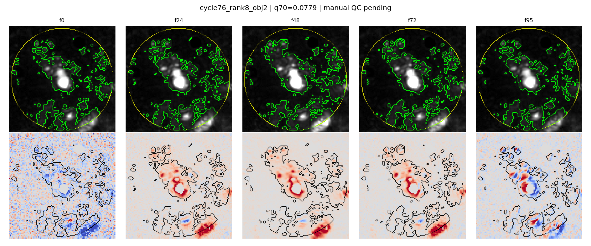
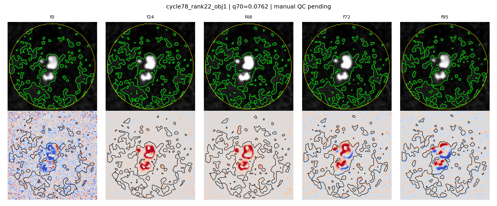
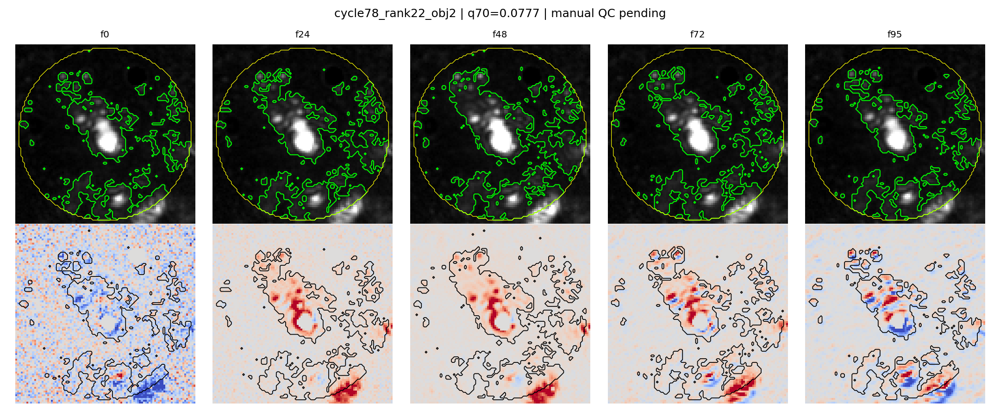
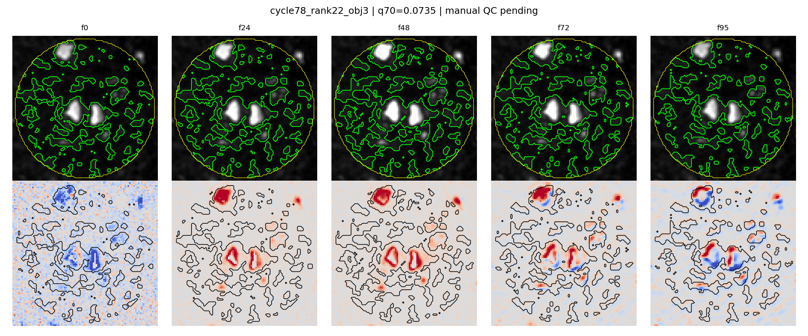
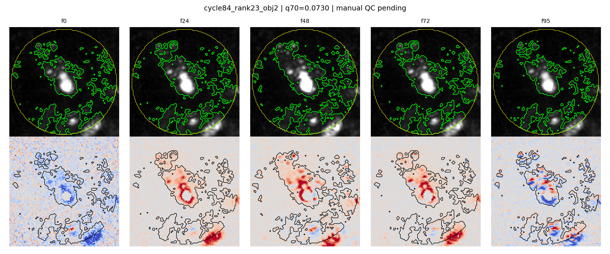

Automatic panels for pending manual front identity review. No labels are assigned by this file.
Role: same_source_prev_cycle_same_object_rank | Flags: fragmented_q70_mask;no_dominant_component;weak_radius2_fit | Score: 1.426

Manual fields in CSV: particle identity, q70 front coherence, edge/drift artifact risk, diffusion interpretability, final decision.
Role: same_cycle_neighbor_object | Flags: fragmented_q70_mask;no_dominant_component;weak_radius2_fit | Score: 1.641

Manual fields in CSV: particle identity, q70 front coherence, edge/drift artifact risk, diffusion interpretability, final decision.
Role: target_nearest_diffusion_candidate | Flags: fragmented_q70_mask;no_dominant_component | Score: 1.843

Manual fields in CSV: particle identity, q70 front coherence, edge/drift artifact risk, diffusion interpretability, final decision.
Role: same_cycle_neighbor_object | Flags: fragmented_q70_mask;no_dominant_component;weak_radius2_fit | Score: 1.345

Manual fields in CSV: particle identity, q70 front coherence, edge/drift artifact risk, diffusion interpretability, final decision.
Role: same_source_later_cycle_same_object_rank | Flags: fragmented_q70_mask;no_dominant_component;weak_radius2_fit | Score: 1.426

Manual fields in CSV: particle identity, q70 front coherence, edge/drift artifact risk, diffusion interpretability, final decision.